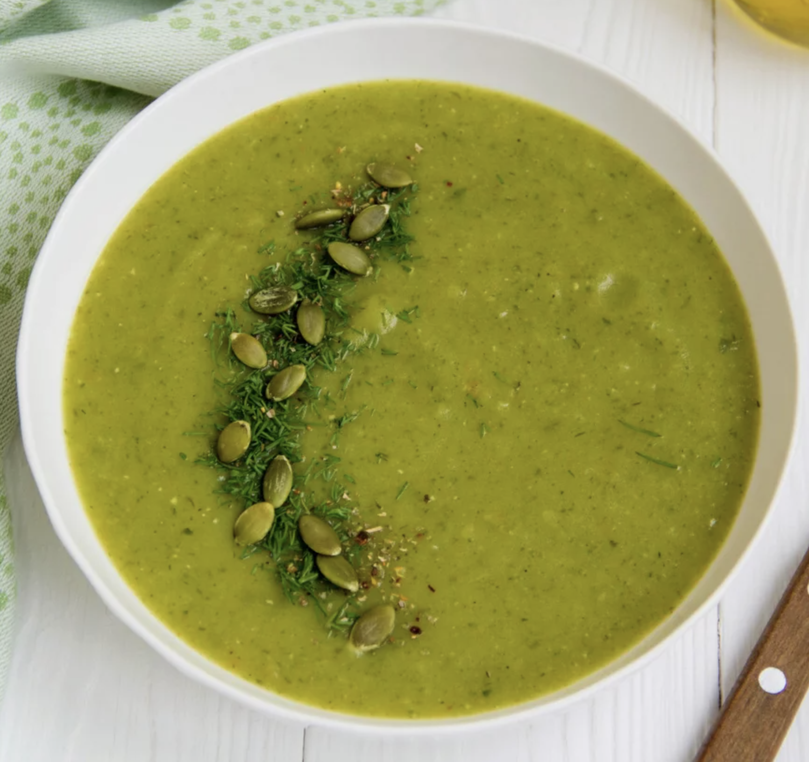

приготовление:
-
Вскипятить воду. Разделить на соцветия 200 г брокколи и 200 г цветной капусты. Очистить и нарезать кубиками 3 картофелины. Нарезать кружочками 1 стебель лука-порея. Очистить 1 небольшой цукини, удалить сердцевину и нарезать кубиками.
-
Переложить овощи в кастрюлю, добавить 0,5 ст. л. соли и залить кипятком так, чтобы вода только покрывала овощи. После повторного закипания варить 15 минут.
-
Слить примерно половину жидкости в отдельную ёмкость. Добавить 1 зубчик чеснока и ≈ 30 г сливочного масла, измельчить суп блендером до однородности. Попробовать и при необходимости досолить.